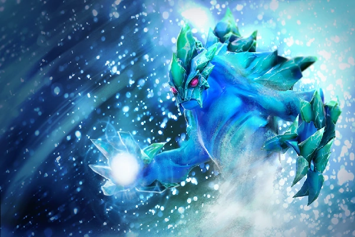

Morphling
Багато століть космос борозенила крижана комета. Величезний шар, прикутий до далекої зірки невблаганними силами гравітації, мчав крізь темряву між світами, знаходячи у своїй подорожі надзвичайні якості. Одного разу, напередодні війни за Влою, комета впала з зоряного неба, залишивши в ночі світ, що світиться, прийнятий обома арміями як знак долі. Крижана куля стрімко танула у спалаху киплячої спеки, а дві сторони схльоснулися в сутичці по берегах вузької річки. Тоді, вирвавшись із крижаного сну, був народжений Морфлінг — елементаль, що має силу стихії так само примхливої і неприборканої, як сам океан. Він інстинктивно прийняв образ першого ж генерала, який наважувався ступити у воду, і вбити того намертво, вступив у бій. Поки дурні солдатики билися один з одним, елементаль переміщався полем битви, змінюючи форму одну за одною. Він миттєво поглинав образи дивних істот — то піхотинця, то лучника, то кавалериста, — і на той час, коли впав останній солдат, елементаль зіграв кожну роль. Кінець цієї битви став його початком.
